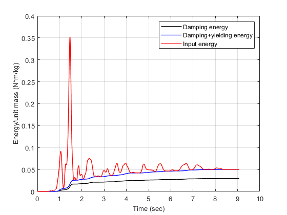

verification Energy time histories of nonlinear SDOF oscillator
Calculate the time histories of the energy dissipated by damping, the energy dissipated by yielding, as well as the energy that is input to two SDOF oscillators with two different eigenperiods.
Contents
- Reference
- Description
- Load earthquake data
- Setup parameters for NLIDABLKIN function for nonlinear SDOF with T=0.2s
- Calculate dynamic response of the nonlinear SDOF with T=0.2s
- Plot the energy time histories of the nonlinear SDOF with T=0.2s
- Setup parameters for NLIDABLKIN function for nonlinear SDOF with T=0.5s
- Calculate dynamic response of the nonlinear SDOF with T=0.5s
- Plot the energy time histories of the nonlinear SDOF with T=0.5s
- Copyright
Reference
Uang, C. M., & Bertero, V. V. (1990). Evaluation of seismic energy in structures. Earthquake engineering & structural dynamics, 19(1), 77-90.
Description
Figure 3(b) of the above reference is reproduced in this example, for both linear elastic-perfectly plastic SDOF systems (short period and long period). Thetwo eigenperiods considered are T=0.2 sec and T=5.0 sec. The damping ratio is 5% of the critical value and the ductility ratio achieved is equal to 5 for both SDOF systems. Figure 3(b) is verified in terms of damping energy (noted as E_ksi in the Figure), yielding energy (noted as E_h in the Figure) and input energy (noted as Ei in the Figure).
Load earthquake data
Earthquake acceleration time history of the 1986 San Salvador earthquake will be used (San Salvador, 10/10/1986, Geotech Investigation Center, component 90)
fid=fopen('SanSalvador1986GIC090.txt','r'); text=textscan(fid,'%f %f'); fclose(fid); t=text{1,1}; dt=t(2)-t(1); xgtt=text{1,2};
Setup parameters for NLIDABLKIN function for nonlinear SDOF with T=0.2s
Mass
m=1;
Eigenperiod
T=0.2;
Calculate the small-strain stiffness matrix
omega=2*pi/T; k_hi=m*omega^2;
Assign post-yield stiffness
k_lo=0.0001*k_hi;
Assign yield limit
uy=0.004875;
Critical damping ratio
ksi=0.05;
Initial displacement
u0=0;
Initial velocity
ut0=0;
Algorithm to be used for the time integration
AlgID='U0-V0-Opt';
Minimum absolute value of the eigenvalues of the amplification matrix
rinf=1;
Maximum tolerance of convergence for time integration algorithm
maxtol=0.01;
Maximum number of iterations per integration time step
jmax=200;
Infinitesimal acceleration
dak=eps;
Calculate dynamic response of the nonlinear SDOF with T=0.2s
Apply NLIDABLKIN
[u,ut,utt,Fs,Ey,Es,Ed,jiter] = NLIDABLKIN(dt,xgtt,m,k_hi,k_lo,uy,...
ksi,AlgID,u0,ut0,rinf,maxtol,jmax,dak);
Calculate the kinetic energy of SDOF
Ek=1/2*m*ut.^2;
Plot the energy time histories of the nonlinear SDOF with T=0.2s
Plot the damping energy, yielding energy and input energy
figure() plot(t',cumsum(Ed),'k','LineWidth',1) hold on plot(t',cumsum(Ed)+cumsum(Ey)-Es,'b','LineWidth',1) plot(t',cumsum(Ed)+cumsum(Ey)+Ek,'r','LineWidth',1) hold off xlim([0,10]) ylim([0,0.6]) xlabel('Time (sec)','FontSize',10); ylabel('Energy/unit mass (N*m/kg)','FontSize',10); %title('(a)','FontSize',10) grid on legend('Damping energy','Damping+yielding energy','Input energy') drawnow; pause(0.1)

Show the achieved ductility factor (must be equal to 5 according to the above reference)
max(abs(u))/uy
ans =
5.00074829936011
Setup parameters for NLIDABLKIN function for nonlinear SDOF with T=0.5s
Mass
m=1;
Eigenperiod
T=5;
Calculate the small-strain stiffness matrix
omega=2*pi/T; k_hi=m*omega^2;
Assign post-yield stiffness
k_lo=0.0001*k_hi;
Assign yield limit
uy=0.023;
Critical damping ratio
ksi=0.05;
Initial displacement
u0=0;
Initial velocity
ut0=0;
Algorithm to be used for the time integration
AlgID='U0-V0-Opt';
Minimum absolute value of the eigenvalues of the amplification matrix
rinf=1;
Maximum tolerance of convergence for time integration algorithm
maxtol=0.01;
Maximum number of iterations per integration time step
jmax=200;
Infinitesimal acceleration
dak=eps;
Calculate dynamic response of the nonlinear SDOF with T=0.5s
Apply NLIDABLKIN
[u,ut,utt,Fs,Ey,Es,Ed,jiter] = NLIDABLKIN(dt,xgtt,m,k_hi,k_lo,uy,...
ksi,AlgID,u0,ut0,rinf,maxtol,jmax,dak);
Calculate the kinetic energy of SDOF
Ek=1/2*m*ut.^2;
Plot the energy time histories of the nonlinear SDOF with T=0.5s
Plot the damping energy, yielding energy and input energy
figure() plot(t',cumsum(Ed),'k','LineWidth',1) hold on plot(t',cumsum(Ed)+cumsum(Ey)-Es,'b','LineWidth',1) plot(t',cumsum(Ed)+cumsum(Ey)+Ek,'r','LineWidth',1) hold off xlim([0,10]) %ylim([0,0.6]) xlabel('Time (sec)','FontSize',10); ylabel('Energy/unit mass (N*m/kg)','FontSize',10); %title('(a)','FontSize',10) grid on legend('Damping energy','Damping+yielding energy','Input energy') drawnow; pause(0.1)
Show the achieved ductility factor (must be equal to 5 according to the above reference)
max(abs(u))/uy
ans =
4.99190405960856
Copyright
Copyright (c) 2018-2023 by George Papazafeiropoulos
- Major, Infrastructure Engineer, Hellenic Air Force
- Civil Engineer, M.Sc., Ph.D.
- Email: gpapazafeiropoulos@yahoo.gr